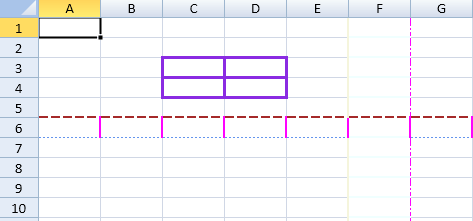
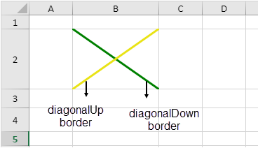
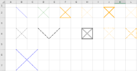

SpreadJS supports borders around cells, columns, or rows. The widget also displays gridlines by default. You can set the color or line style of the border around the cells, columns, or rows. You can specify the color and whether to show gridlines. You can also set diagonal lines in a cell and a cell range.
Use the setBorder method to set a border. You can also use the borderBottom, borderTop, borderRight, and borderLeft methods to set a cell border.

The options.gridline property can be used to set the gridline color and specify the horizontal or vertical gridline in the widget. By default, the sheet displays both the vertical and horizontal grid lines. The default grid line color is #d0d7e5.
You can organize complex data headers by setting diagonal line borders in the cell. In order to set diagonal lines in a cell or a cell range, you can use the diagonalUp method and diagonalDown method. The diagonalUp method represents the top-right point line in a cell to the bottom-left point line in a cell (refer to the yellow line in the diagram shown below). The diagonalDown method represents the top-left point line in a cell to the bottom-right point in a cell (refer to the green line in the diagram shown below).

The Diagonal border line feature in Spread JS supports all types of line styles (dashDot, dashDotDot, dashed, dotted, double, empty, hair, medium, mediumDashDot, mediumDashDotDot, mediumDashed, SlantedDashDot, thick, thin) as shown in the below image.
| Dynamic Image |
|
images/diagonal_all_thumb.png 
Line Styles supported in Diagonal Border Lines |
Apart from the above line styles, diagonal border lines also support JSON serialization/deserialization, Excel I/O and PDF export (for printing).
Using Code
This example specifies whether to show the gridlines and sets the gridline color.
| JavaScript |
Copy Code
|
|---|---|
worksheet.options.gridline = {color:"#FF2235", showVerticalGridline: true, showHorizontalGridline: false};
|
|
Using Code
This example sets the border color.
| JavaScript |
Copy Code
|
|---|---|
| activeSheet.getRange(2, 2, 2, 2, GC.Spread.Sheets.SheetArea.viewport).setBorder(new GC.Spread.Sheets.LineBorder("#8A2BE2", GC.Spread.Sheets.LineStyle.medium), {all:true},3); activeSheet.getRange(-1,5, -1, 1).borderTop(new GC.Spread.Sheets.LineBorder("#F0FFFF",GC.Spread.Sheets.LineStyle.medium)); activeSheet.getRange(-1, 5, -1, 1).borderLeft(new GC.Spread.Sheets.LineBorder("#F5F5DC",GC.Spread.Sheets.LineStyle.medium)); activeSheet.getRange(-1, 5, -1, 1).borderRight(new GC.Spread.Sheets.LineBorder("#FF02FF", GC.Spread.Sheets.LineStyle.dashDot)); activeSheet.getRange(-1, 5, -1, 1).borderBottom(new GC.Spread.Sheets.LineBorder("#FFE4C4",GC.Spread.Sheets.LineStyle.thin)); activeSheet.getRange(5, -1, 1, -1).borderTop(new GC.Spread.Sheets.LineBorder("#A52A2A",GC.Spread.Sheets.LineStyle.mediumDashed)); activeSheet.getRange(5, -1, 1, -1).borderLeft(new GC.Spread.Sheets.LineBorder("#FF02FF",GC.Spread.Sheets.LineStyle.medium)); activeSheet.getRange(5, -1, 1, -1).borderRight(new GC.Spread.Sheets.LineBorder("#5F9EA0", GC.Spread.Sheets.LineStyle.dashDot)); activeSheet.getRange(5, -1, 1, -1).borderBottom(new GC.Spread.Sheets.LineBorder("#6495ED",GC.Spread.Sheets.LineStyle.dotted)); |
|
Using Code
This example code sets the diagonal lines in a cell.
| JavaScript |
Copy Code
|
|---|---|
var sheet = spread.getActiveSheet(); var cell = sheet.getCell(1, 1); cell.diagonalDown(new GC.Spread.Sheets.LineBorder("blue",GC.Spread.Sheets.LineStyle.thick)); cell = sheet.getCell(1, 3); cell.diagonalDown(new GC.Spread.Sheets.LineBorder("green" ,GC.Spread.Sheets.LineStyle.double)); cell.diagonalUp(new GC.Spread.Sheets.LineBorder("yellow",GC.Spread.Sheets.LineStyle.double)); |
|